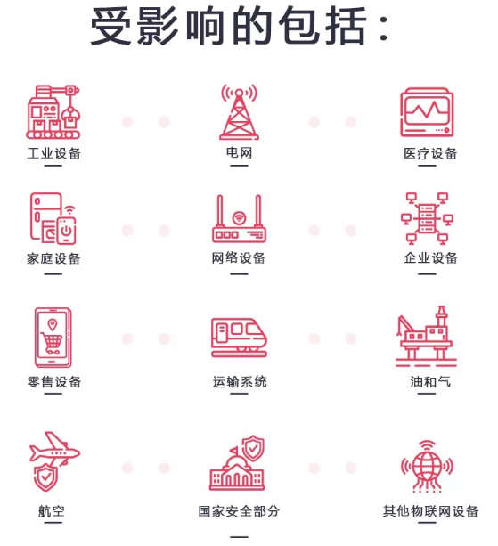
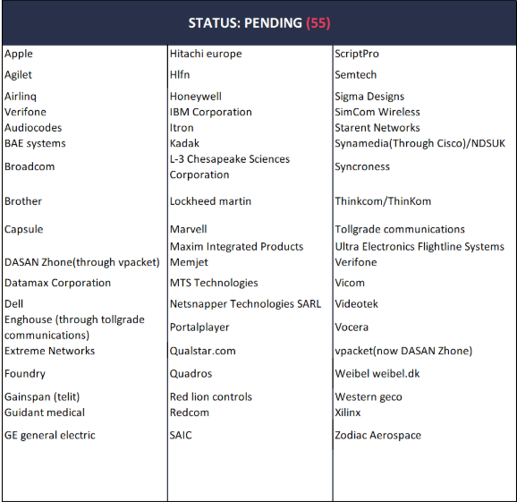
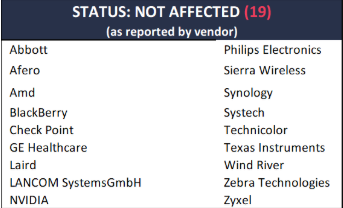
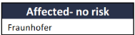

Ripple20分析（一）
Ripple20
JSOF研究室在Treck公司开发的TCP/IP软件库中发现了一些列0day，这19个漏洞取名为Ripple20。Treck公司开发的软件库广泛传播，因其供应链Ripple20能够影响到数亿台设备，所以分析Ripple20很有必要！
影响之广
Ripple中包含了多个远程代码执行漏洞。参考JSOF研究室发表的文章，利用Ripple20能够达到的效果有：从打印机中窃取数据，改变输液泵的行为或者导致工业控制设备出现故障，攻击者公告该漏洞在嵌入式设备中隐藏恶意代码达到绕过网络边界防护，达到获取内网设备控制权的目的。
文章中还提到Ripple20同时影响了广泛领域的关键物联网设备，涉及了众多供应商。包括：惠普，施耐德电气，英特尔以及医疗，运输，工业控制方面，电信，零售等其他行业。
一张图概括受影响的设备：

JSOF在youtube上展示了如何利用Ripple20来攻击UPS设备（不间断电源）,达到给所有连接到UPS设备的嵌入式设备断电的效果。
如何识别设备是否使用Treck的产品
方法一：发送邮件到Ripple20@jsof-tech.com。
方法二：了解19个漏洞的原理，尝试在相关设备上实验。
漏洞描述
漏洞用图表的方式显示：
| CVE ID | CVSSv3 | 描述 | 潜在影响 | 受影响的版本 |
|---|---|---|---|---|
| CVE-2020-11896 | 10 | 可以通过将多个格式错误的IPv4数据包发送到支持IPv4隧道的设备来触发此漏洞。它会影响使用特定配置运行Treck的任何设备。它可以实现稳定的远程代码执行，并且已在Digi International设备上进行了演示。可能会触发此问题的变体，导致拒绝服务或永久拒绝服务，需要进行硬重置。 | 远程代码执行 | 6.0.1.66（2020年3月3日发行） |
| CVE-2020-11897 | 10 | 可以通过向设备发送多个格式错误的IPv6数据包来触发此漏洞。它会影响运行支持IPv6的旧版Treck的任何设备，并且先前已作为例行代码更改进行了修复。它可能会允许稳定的远程代码执行。 | 越界 写 | 5.0.1.35（2009年4月6日发行） |
| CVE-2020-11901 | 9 | 可以通过回答设备发出的单个DNS请求来触发此漏洞。它会影响任何运行支持DNS的Treck的设备，并且我们已经证明它可用于在Schneider Electric APC UPS上执行远程代码执行。我们认为，尽管CVSS评分为9.0，这是最严重的漏洞，这是因为DNS请求可能会离开该设备所在的网络，而精巧的攻击者可能能够利用此漏洞来进行攻击。通过DNS缓存中毒或其他方法从网络外部通过设备访问。因此，攻击者可以绕过网络并利用一个漏洞绕过任何安全措施来接管设备。 格式错误的数据包几乎完全符合RFC标准，因此对于防火墙等安全产品来说，检测该漏洞可能很困难。在仍然在某些设备上运行的非常老版本的Treck堆栈上，交易ID不会随机化，从而使攻击更加容易。 | 远程 码 执行 | 6.0.1.66（版本03/03/2020） |
下面列出其他的漏洞
| CVE ID | CVSSv3 | 描述 | 受影响的版本 |
|---|---|---|---|
| CVE-2020-11898 | 9.1 | 处理未经授权的网络攻击者发送的数据包时，IPv4 / ICMPv4组件中的长度参数不一致（CWE-130）处理不当。可能暴露的敏感信息（CWE-200） | 6.0.1.66（版本03/03/2020） |
| CVE-2020-11900 | 8.2 | 处理网络攻击者发送的数据包时，IPv4隧道组件中可能存在双重释放（CWE-415）。 免费使用（CWE-416） | 6.0.1.41（2014年10月15日发行） |
| CVE-2020-11902 | 7.3 | 处理未经授权的网络攻击者发送的数据包时，IPv6OverIPv4隧道组件中的输入验证不正确（CWE-20）。 可能的越界读取（CWE-125） | 6.0.1.66（03/03/20版） |
| CVE-2020-11904 | 5.6 | 处理未经授权的网络攻击者发送的数据包时，内存分配组件中可能存在整数溢出或环绕（CWE-190）可能的界外写入（CWE-787） | 6.0.1.66（版本03/03/2020） |
| CVE-2020-11899 | 5.4 | 处理未经授权的网络攻击者发送的数据包时，IPv6组件中的输入验证不正确（CWE-20）。可能的越界读取（CWE-125）和可能的拒绝服务。 | 6.0.1.66（03/03/20版） |
| CVE-2020-11903 | 5.3 | 处理未经授权的网络攻击者发送的数据包时，DHCP组件中的可能的越界读取（CWE-125）。可能暴露的敏感信息（CWE-200） | 6.0.1.28（版本10/10/12） |
| CVE-2020-11905 | 5.3 | 处理未经授权的网络攻击者发送的数据包时，DHCPv6组件中可能的越界读取（CWE-125）。可能暴露的敏感信息（CWE-200） | 6.0.1.66（03/03/20版） |
| CVE-2020-11906 | 5 | 未经授权用户发送的数据包中的以太网链路层组件中的输入验证不正确（CWE-20）。整数下溢（CWE-191） | 6.0.1.66（03/03/20版） |
| CVE-2020-11907 | 5 | TCP组件中长度参数不一致（CWE-130）的不正确处理，来自未经授权的网络攻击者发送的数据包整数下溢（CWE-191） | 6.0.1.66（03/03/20版） |
| CVE-2020-11909 | 3.7 | 处理未经授权的网络攻击者发送的数据包时，IPv4组件中的输入验证不正确（CWE-20）。整数下溢（CWE-191） | 6.0.1.66（03/03/20版） |
| CVE-2020-11910 | 3.7 | 处理未经授权的网络攻击者发送的数据包时，ICMPv4组件中的输入验证不正确（CWE-20）。可能的越界读取（CWE-125） | 6.0.1.66（03/03/20版） |
| CVE-2020-11911 | 3.7 | 处理未经授权的网络攻击者发送的数据包时，ICMPv4组件中的访问控制（CWE-284）不正确。 关键资源的权限分配不正确（CWE-732） | 6.0.1.66（03/03/20版） |
| CVE-2020-11912 | 3.7 | 处理未经授权的网络攻击者发送的数据包时，TCP组件中的输入验证不正确（CWE-20）。可能的越界读取（CWE-125） | 6.0.1.66（03/03/20版） |
| CVE-2020-11913 | 3.7 | 处理未经授权的网络攻击者发送的数据包时，IPv6组件中的输入验证不正确（CWE-20）。可能的越界读取（CWE-125） | 6.0.1.66（03/03/20版） |
| CVE-2020-11914 | 3.1 | “处理未经授权的网络攻击者发送的数据包时，ARP组件中的输入验证不正确（CWE-20）。”可能的越界读取（CWE-125） | 6.0.1.66（03/03/20版） |
| CVE-2020-11908 | 3.1 | 处理未经授权的网络攻击者发送的数据包时，DHCP组件中的Null终止（CWE-170）不正确。可能暴露的敏感信息（CWE-200） | 4.7.1.27（07年11月8日发行） |
受影响的供应商
数据来源于：CISA ICS-CERT在内部文档中列出并联系过的供应商。并且CISA ICS-CERT根据供应商的响应来提供每个供应商受影响状态，包括表明没有受影响的供应商也被记录下来，用于以后问责。
受影响的产品可以通过下面相关漏洞分析中供应商建议中找到，也可以直接从供应商处找到。
以下的列表会不时的更新，如果有同学发现了错误的地方可以联系Ripple20@jsof-tech.com。
| 证实受影响的供应商（STATUS: CONFIRMED） |
|---|
| Aruba Networks 、B. Braun、Baxter、BECK/HMS Networks、CareStream、Caterpillar、Cisco(through Starent)、Digi International、Eaton、Green Hills Software、HCL Tech、HP、HPE、Intel、Maxlinear(through HLFN)、Opto22、Rockwell、Schneider Electric/APC、Teradici、Xeroex、Zuken Elmic |
待证实的供应商：

不受影响的供应商：供应商自己报告的：

确实不受影响的：

相关厂商和机构提供的安全建议
Advisories by: ICS CERT, CERT/CC, JPCERT/CC,CERT-IL
Advisories by: Aruba Networks, [B.Braun](https://www.bbraunusa.com/content/dam/b-braun/us/website/customer_communications/Skyline Response_Outlook_6.9.2020_FINAL1.pdf),[Baxter](https://www.baxter.com/sites/g/files/ebysai746/files/2020-06/BulletinSpectrumDigiTreck (003).pdf), CareStream, Caterpillar, Cisco , Digi International, Green Hills, HP, HPE, Intel, Rockwell Automation, Schneider Electric, Teradici, Xerox